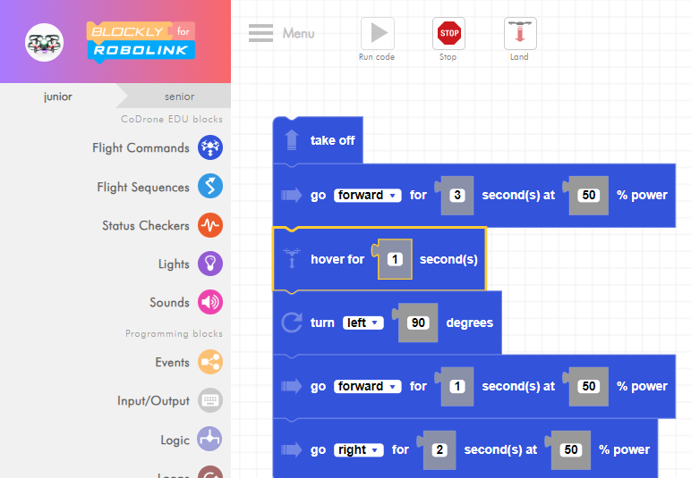

Do It! CoDrone EDU: Obstacle Course
 The Challenge
The Challenge
Your challenge is to design an obstacle course using a coordinate plane. Then, build the course and program CoDrone EDU to fly the path while avoiding added obstacles.
Project Steps
-
Graph Your Obstacle Course
- Set a Unit of Distance
- Program and Test
- Loop It
-
Create the Obstacle Course
-
Avoid Obstacles
Graph Your Obstacle Course
To design your obstacle course, use this graph paper, which shows the 1st quadrant of a coordinate plane. Read all of the instructions here before getting started.
- Draw and label coordinates.
- Connect the coordinates with lines. These lines will represent the flight path.
- Connected coordinates should share an x or y coordinate so that distances can easily be calculated. For example, (5,1) and (5,4) share an x-coordinate, so these coordinates can be connected by a line. (3,6) and (6,6) share a y-coordinate. See the image below for an example.
- Calculate the lengths of those lines by subtracting the smaller coordinate value from the larger one.
You will collect a photo of your coordinate plane, which should include labeled coordinates and the calculated distances between connected coordinates, and upload this photo for your project submission.
Set a Unit of Distance
Before you can program CoDrone EDU to fly your path, first, set a unit of distance. For CoDrone EDU, this is the distance traveled for 1 second at a defined power percentage. For example, 1 unit of distance can be the equivalent of 1 second of flight at 50% power.
If you haven’t already done so, you will want to test how far CoDrone EDU flies at 50% power for 1 second. If you realize that it covers too much distance—considering how many units of distance you mapped out on your coordinate plane compared to the size of your flight space—you may want to test the flight distance at 10% or 20% power for 1 second. Choose a unit of distance that will work with your allotted space. This unit of distance will need to be the same for all paths programmed.
Program and Test
Once you establish your unit of distance, write a program in Blockly to direct CoDrone EDU flight to match the path you drew on your coordinate plane.
Test your program and make modifications until the flight pattern matches the path drawn on your coordinate plan.

Loop It
In order to mark down the path of flight with masking tape, you will need your drone to repeatedly fly the path while you lay down the tape. The easiest way to make this happen is to loop your program. Complete Blockly Lesson 1.6: Loops to learn how to do this. Then, use what you learn to modify your program. This will help you in the next step.
You will collect a screenshot of your program with the loop and upload it for your project submission.
Create the Obstacle Course
Use masking tape or painter’s tape to mark down the path on the floor of your flight space. You will need to follow the flight of your drone and match its flight path. The loop will make your drone fly continuously to give you time to mark its path.
In Lesson 1.6: Loops, you learned multiple ways to have your program repeat. You may choose any one of the methods to have your flight pattern repeat; the first “for loop” is the simplest option. However, if you want a challenge, try the more difficult “for loop”, the “while loop”, or the “until loop”.
Once you have marked out the entire path, add in obstacles for CoDrone EDU to fly over or under. If you choose to have CoDrone EDU fly under obstacles, make sure there is enough clearance for it to get through without crashing. You may want to test this by manually flying CoDrone EDU under the obstacle using the controller.
You will collect a photo of your complete obstacle course to upload for your project submission.
Avoid Obstacles
Modify your program to avoid the obstacles. You can first remove the loop from your program to simplify things.
You will collect a screenshot of the modified program for your project submission.